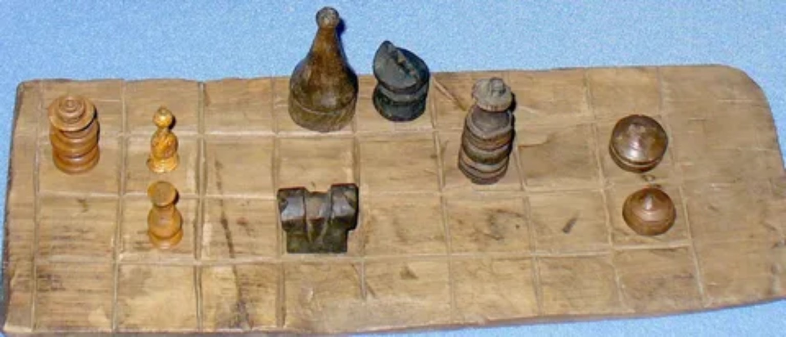

Шахматы — одна из немногих игр, которая прошла сквозь века, империи и континенты, почти не потеряв своей сути. Менялись названия фигур, правила, скорость игры — но сама идея противостояния двух умов на клетчатой доске осталась неизменной.
За более чем полторы тысячи лет шахматы превратились из военной забавы индийских раджей в интеллектуальный спорт, который объединяет миллионы людей по всему миру. Сегодня в шахматы играют в школах и офисах, на кухнях и на чемпионатах мира, онлайн и за деревянной доской.
Эта страница расскажет, как простые фигурки на доске 8×8 прошли путь от чатуранги до современного спорта.
